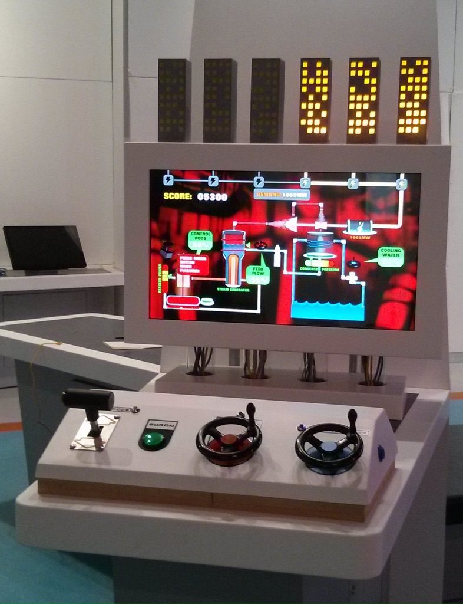

Exhibit Portfolio
I have far too many electronic components in my workshop. My boxes are all full, my cupboards overflowing. Please help by commissioning me to make things out of them.
Below are a selection of the exhibts and interactive installations I've made recently.

2014
This project was built for Brighton Digital Festival 2014.
It used the Oculus DK2 VR headset and allowed the audience to experience a live minature dark ride from a live HD video feed. The cameras rotation was built to sync with positions along the track, and also controlled the vintage lego monorail it rode on.
This project was done in collaberation with Art Studio persitent peril, who came up with the overall concept, the art design and animations.

2015
Description: Installed in Glasgow science centre, this is a game that simulates the workings of a nuclear reactor.
I designed the electronics, controls and lighting to this project. I also wrote the lighting control code and integrated it into the game.

2011-2018
I have designed, built and run the tech4good live glowstick voting system every year since 2011. It allows the audience to vote by simply waving their glowsticks. It's been written in flash, webgl and unity over the years, and I try to update the design each year.
2018
This game is installed at the SS Great Britian museum in Bristol. It emulates the look and feel of a vegas slot machine, but you're gambling on the success of Isambard Kingdom Brunnels projects. I was responsible for creating the games software, the electronics, the multi screen display, and controls.
2018
I acted as a technical supervisor for this art installation for Kristina Veasey. The work was carried out by Owen Daughtery. The installation consisted of a 1960's telephone that would ring when an audience member was in front of it. When answered it would play one of several interviews through the original handset. Although a relatively simple project, keeping the telephone as authentic as possible including using the original telephone lead was an interesting challenge.
2018
I was commisioned by artist Amy Godliman to convert this vintage 1950's radio for her installation. It now plays a series of looping prerecorded stations, the user tunes through generative whitenoise to find them. The stations and their transmision frequency positions are loaded into the device via a microSD card.

2018
This was created for Pier Pressure's "90's rave" escape room. It was the first of three projects I've not built for this Brighton based Escape Room company. Formally an ordinary DJ Mixer, this now requires participants to set it's controls to particuluar positions to unlock a surpise.